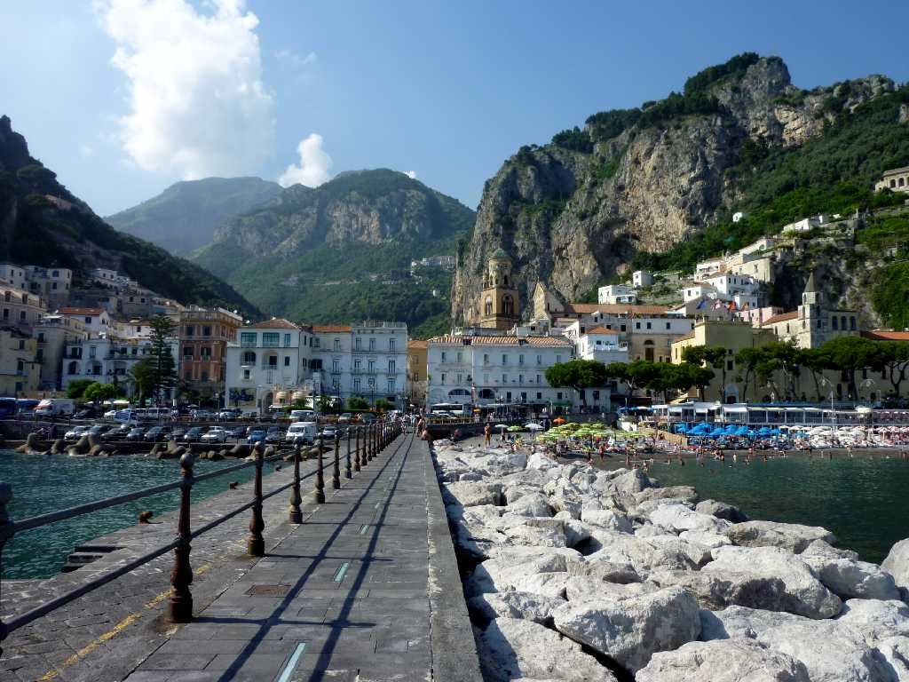
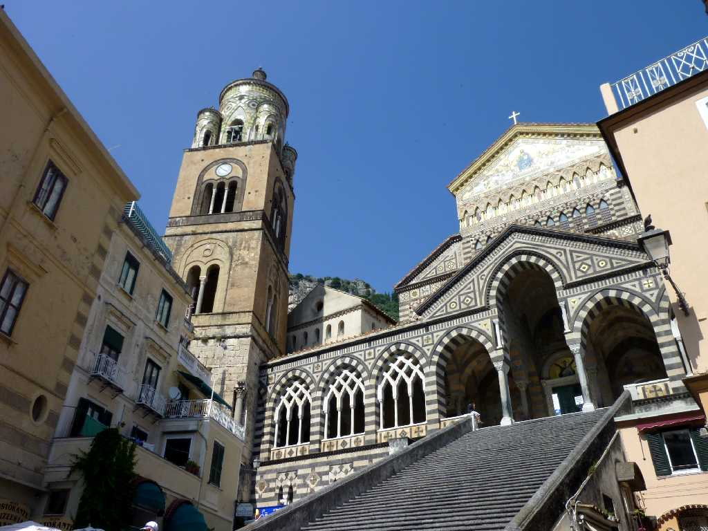
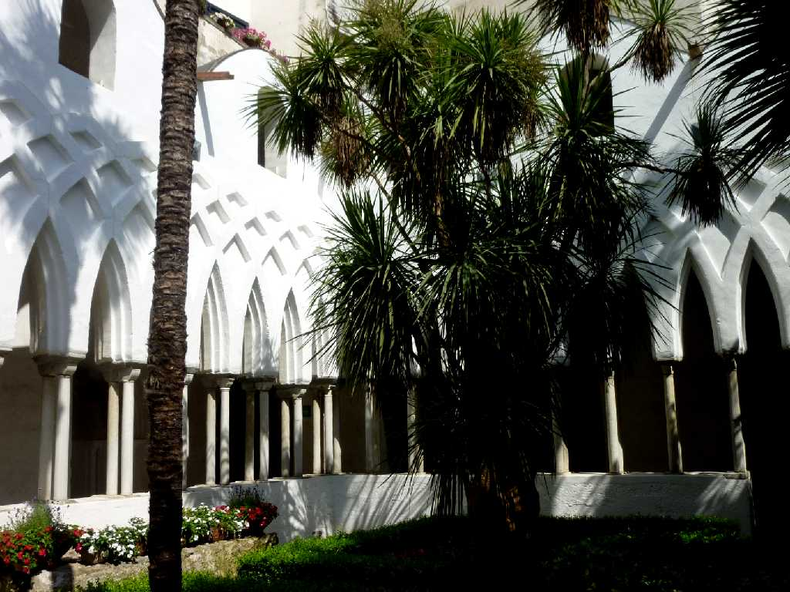
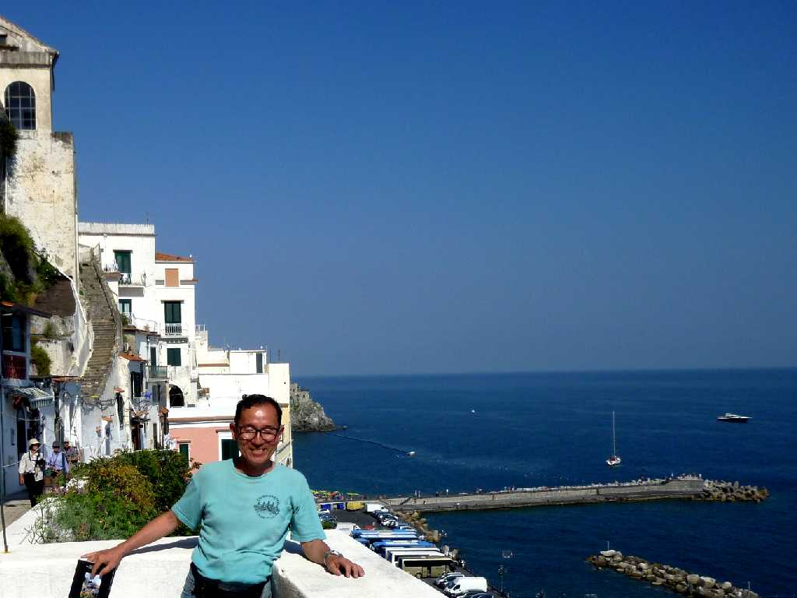

Amalfi
断崖に囲まれた地の利により外敵の侵入を撃退するのに優れていたため古代ローマ時代から栄え１１世紀には地中海の四大海洋都市国家(ヴェネティア ジェノヴァ ピサ)として繁栄を極めた アマルフィの人々により航海に関する法典であるアマルフィ法典が創られ様々な海洋法典の雛形として１７世紀まで用いられていた

Duomo Amalfi
１１世紀に創られたアラブシチリア様式の大聖堂

Chiostro del Paradiso Duomo
１３世紀に創られた天国の回廊

June 21 2011 Amalfi